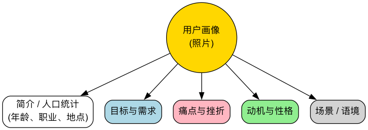

用户画像¶
在任何以用户为中心的设计过程中，一个反复出现的核心挑战是：我们究竟在为谁设计？如果团队成员对目标用户的理解是模糊、片面甚至相互矛盾的，那么产品决策就很容易偏离方向。用户画像（Persona） 正是解决这一难题的强大工具。它并非简单的用户描述，而是基于真实的用户研究数据，精心构建出的一个代表特定用户群体的、可信的虚拟人物模型。
用户画像的根本目的，是将抽象、冰冷的用户数据，转化为一个有名字、有面孔、有故事、有情感的“具体的人”。这使得设计团队能够真正地“走进”用户的世界，在共情的基础上做出更有洞察力的设计决策。
用户画像的构成要素¶
一个内容翔实、能引发共鸣的用户画像，通常包含以下几个关键部分，它们共同描绘出一个立体的人物形象。
- 基本信息与照片：赋予画像一个真实的名字、一张看起来可信的照片、以及年龄、职业、地点等基本人口学信息。这能极大地增强画像的真实感和代入感。
- 引言 (Quote)：用一句这个虚拟人物可能会说的话，来高度概括他/她的核心诉求或态度。例如，“我需要一个能整合团队信息，让我随时掌握进度的工具。”
- 目标 (Goals)：这是画像的核心。描述了该用户群体在使用产品或服务时，最希望达成的核心目标是什么。目标应该是关于用户自身的，而不是关于产品功能的。
- 痛点 (Frustrations/Pain Points)：描述了在实现其目标的过程中，用户当前所面临的主要障碍、困惑和挫败感。产品的核心价值，往往就体现在能否有效解决这些痛点。
- 行为与习惯 (Behaviors)：描绘用户的日常行为模式，尤其是在与产品相关的场景下。他们是如何工作的？他们依赖哪些工具？他们的信息获取渠道是什么？这有助于理解产品的应用场景。
- 动机 (Motivations)：探究驱动用户行为的深层心理因素。可能是对效率的追求、对安全的渴望、对社会认同的需求，或是对个人成长的向往。
用户画像模板¶
下面是一个典型的用户画像结构，可以根据具体项目进行调整。

<!--
mermaid
graph TD
subgraph 用户画像: 李静
direction LR
subgraph 基本信息
A[<b>照片</b><br/><img src=https://i.pravatar.cc/150?img=12 width=100/>]
B[<b>李静, 32岁</b><br/>互联网行业项目经理<br/>已婚，一子<br/><i>“我需要一个能整合团队信息，让我随时掌握进度的工具。”</i>]
end
subgraph 核心特征
C[<b>目标</b><br/>- 按时、高质量地交付项目<br/>- 保持团队成员信息同步，沟通顺畅<br/>- 快速、准确地向管理层汇报进度]
D[<b>痛点</b><br/>- 信息分散在邮件、微信和不同文档中，查找困难<br/>- 难以实时追踪每个子任务的实际进度和瓶颈<br/>- 每天花费大量时间在低效的对齐会议上]
E[<b>行为</b><br/>- 每天早上的第一件事是查看项目看板和未读消息<br/>- 习惯同时使用日历、待办事项和电子表格来管理工作<br/>- 经常需要在不同部门之间协调资源]
F[<b>动机</b><br/>- 责任心强，寻求对项目的掌控感<br/>- 希望平衡工作与生活，减少不必要的加班<br/>- 通过成功交付项目，获得团队和领导的认可]
end
end
如何创建有效的用户画像¶
创建用户画像是一个从发散到收敛的研究过程，绝非拍脑袋的产物。
-
进行用户研究
这是整个过程的基石。你需要通过定性（如深度访谈、田野调查）和定量（如问卷调查、产品后台数据分析）的方法，收集关于真实用户的、第一手的信息。
-
识别关键行为变量
在收集到的数据中，寻找能够区分不同用户群体的关键行为变量。例如，对于一个电商网站，用户的“购物频率”、“对价格的敏感度”、“对品牌的忠诚度”等都是可能的变量。
-
聚类并确定画像数量
根据关键变量，将具有相似行为和目标的用户聚类成不同的用户群体。通常，一个产品选择3-5个最核心的用户群体来创建对应的用户画像是比较合适的。过多的画像会让团队失去焦点。
-
撰写画像故事
为每个用户群体创建一个代表性的虚拟人物。赋予他/她名字、照片和生动的故事，将研究数据和发现的洞察，填充到画像模板的各个模块中，使其有血有肉。
-
在团队中推广和应用
用户画像的价值在于被使用。将最终的画像打印出来，张贴在团队的工作空间，在产品会议、设计评审、功能讨论时频繁地引用它们（“李静会怎么使用这个功能？”），使其成为团队的共同语言和决策的试金石。
实践中的用户画像¶
案例一：一款语言学习App
- 画像: “通勤学习者”孙宇，28岁，市场专员。他希望利用每天上下班地铁上的碎片化时间学习英语。
- 痛点: 地铁环境嘈杂，网络信号不稳定，很难进行需要高度专注或听说练习的学习。
- 设计决策: 基于此画像，App应优先开发“离线课程下载”、“5分钟碎片化知识点”、“以阅读和词汇为主的学习模式”等功能。
案例二：一个家庭菜谱App
- 画像: “新手妈妈”陈洁，30岁。她需要为家人（尤其是有小孩）准备健康、营养且制作简单的晚餐。
- 痛点: 工作繁忙，没有太多时间研究复杂菜谱，同时非常担心食品安全和营养搭配问题。
- 设计决策: App应在首页突出“30分钟快手菜”、“儿童营养餐”、“当季蔬菜”等栏目，并在菜谱中明确标注准备时间、烹饪难度和营养成分。
案例三：一款财务管理软件
- 画像: “精打细算者”王叔叔，55岁，即将退休。他希望清晰地了解自己的财务状况，并为退休生活做稳健的规划。
- 痛点: 对复杂的金融术语和高风险投资感到困惑和不信任，觉得很多理财App操作过于复杂。
- 设计决策: 软件的界面设计应极其简洁清晰，使用通俗易懂的语言，重点突出“资产总览”、“每月固定收支”和“低风险理财推荐”等功能。
用户画像的价值与挑战¶
核心价值
- 建立共情: 它是将设计师、工程师从自我视角中抽离出来，代入用户情境思考的最佳工具。
- 统一决策语言: 为团队在面对分歧时，提供了一个客观的、以用户为中心的仲裁标准。
- 聚焦核心需求: 帮助团队在纷繁复杂的需求中，识别出真正重要的功能并确定其优先级。
潜在挑战
- 研究成本: 创建高质量的用户画像需要投入真实的用户研究，这需要时间和预算。
- “刻板印象”风险: 如果研究不充分或理解片面，可能会创造出错误的、带有刻板印象的画像，从而误导产品方向。
- 时效性: 用户和市场是不断变化的，用户画像也需要定期审视和更新，否则就会变成“活化石”。
延伸与关联¶
用户画像是用户体验设计工具箱中的核心一环，它常常与其他方法紧密结合： * 用户旅程图 (User Journey Map): 在确定了“谁”（用户画像）之后，用户旅程图则详细描绘了这个人为了达成目标，与产品交互的全过程。 * 同理心地图 (Empathy Map): 这是一个更侧重于深入挖掘用户感官与情感的工具，常被用作创建用户画像前期的素材收集和共情练习。
来源参考：Alan Cooper 在其开创性著作《About Face: The Essentials of Interaction Design》中，首次将用户画像（Persona）作为一种正式的设计方法引入软件开发领域。